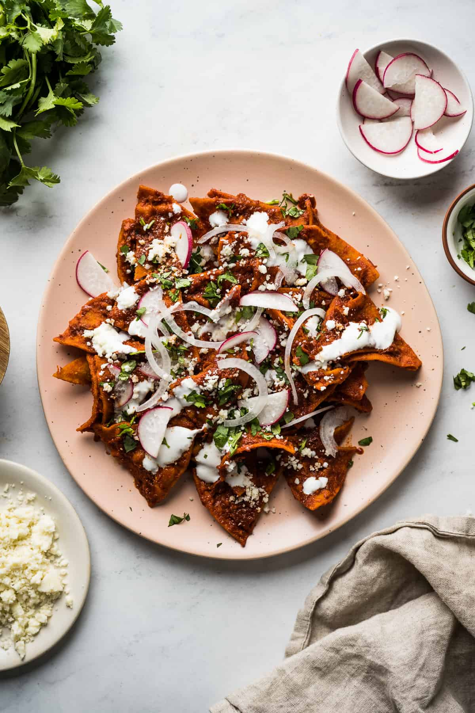

Chilaquiles Rojo

Description
This Chilaquiles recipe features crispy corn tortillas tossed in a flavorful red chile sauce and is topped with cheese, Mexican crema, and more!
Serve this Mexican comfort food for breakfast or brunch with a fried egg in less than 30 minutes.
Ingredients
- 9 guajillo chiles (rinsed, stemmed, and seeded)
- 2 arbol chiles (optional, rinsed and stemmed)
- water as needed>
- 1 Roma tomato
- 1 clove garlic
- 1/4 medium white onion
- 1 1/2 teaspoons kosher salt (plus more as needed)
- 12 corn tortillas
- 1.5 teaspoons vegetable oil (plus more for frying)
To Serving
- cotija cheese
- chopped cilantro
- diced white onions
- Mexican crema or sour cream
- fried eggs (optional)
Steps
- Prep the chiles. In a medium pot, add the guajillo chiles, árbol chiles, and enough water to completely cover them. Bring to a boil over high heat. Remove the pot from the heat, cover, and let the chiles soak for 10 minutes to soften.
- Blend the chiles. Using a slotted spoon, transfer the softened chiles to a blender. Add 1 ½ cups fresh water, the tomato, garlic, onion, and salt. Blend until completely smooth. If the sauce is not smooth, strain it through a fine mesh sieve to remove any solids.
- Slice the tortillas. Stack the corn tortillas on top of each other and cut them into eighths to create small triangle wedges. Line a large plate with paper towels and set it aside.
- Preheat oil. Fill a large sauté pan or deep skillet with about 2 inches of oil and heat over medium-high heat until the temperature reaches at least 350°F. (To test, drop a small piece of tortilla in the oil. If it sizzles, it's ready.)
- Fry the sliced tortillas. Working in batches, add half of the tortillas and fry for 8 minutes, stirring every minute or so, until they are crispy. Transfer them to the lined plate to drain and repeat the frying process with the remaining tortilla wedges.
- Heat up the salsa. In a separate sauté pan or skillet, heat 1 ½ teaspoons of vegetable oil. Pour in the salsa roja and cook for 3 minutes, stirring occasionally.
- Coat the tortillas. Remove the pan from the heat and add in the fried tortilla chips. Gently toss them together to coat.
- Assemble and serve. Serve immediately and garnish with cotija cheese, cilantro, onions, and Mexican crema. Top with a fried egg if desired.